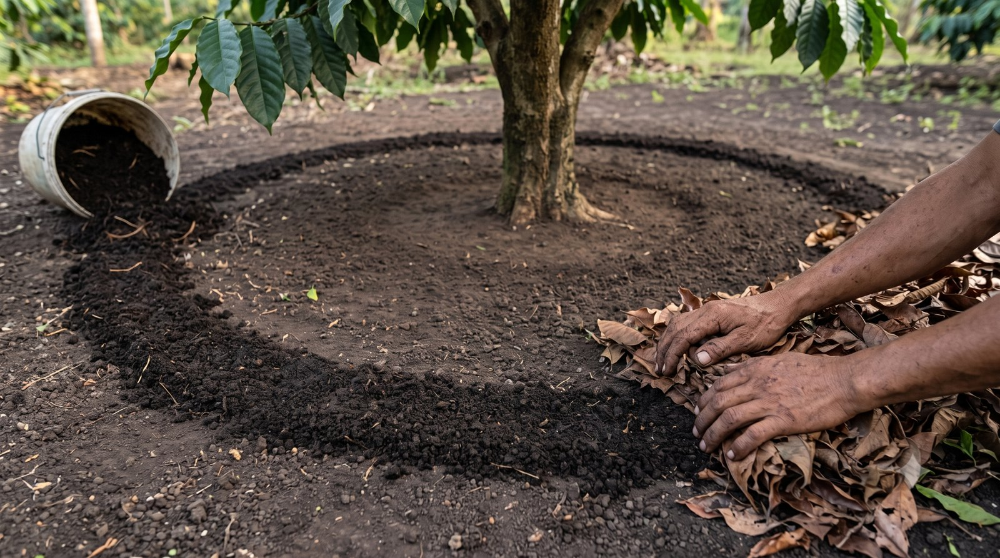
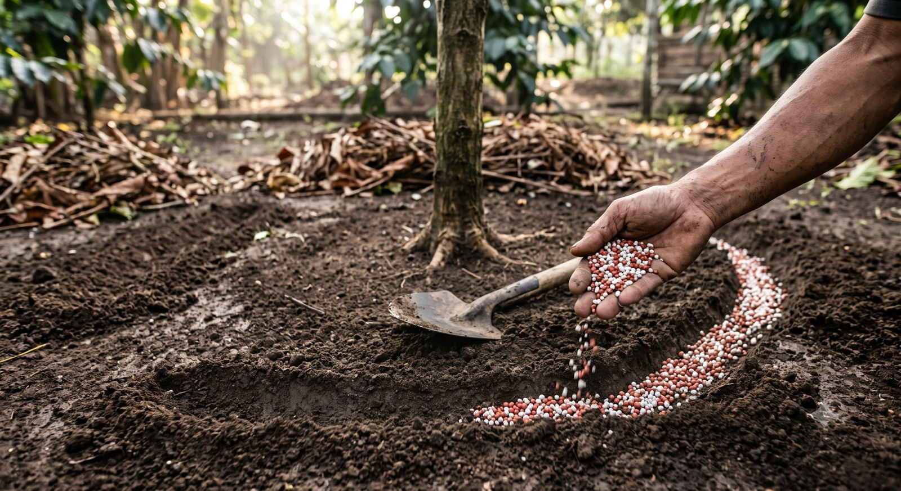
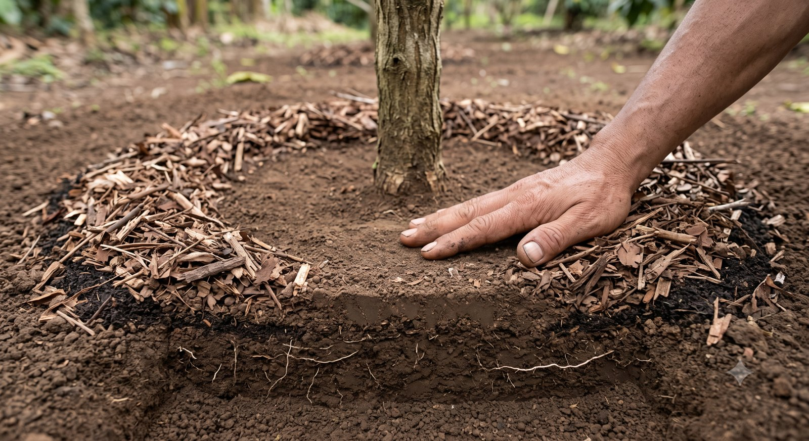
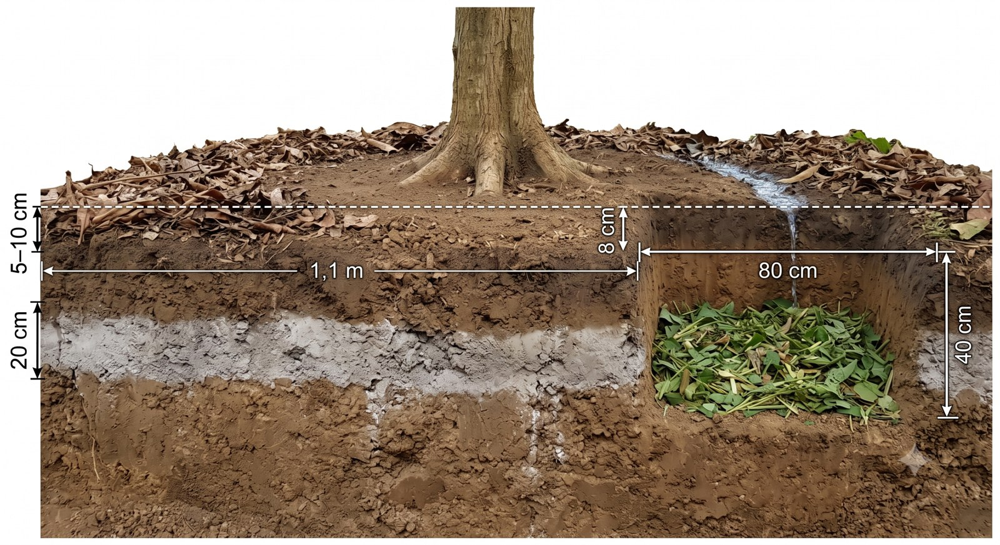
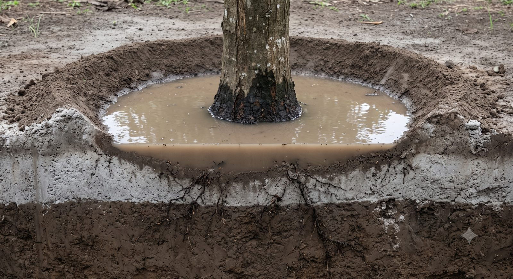
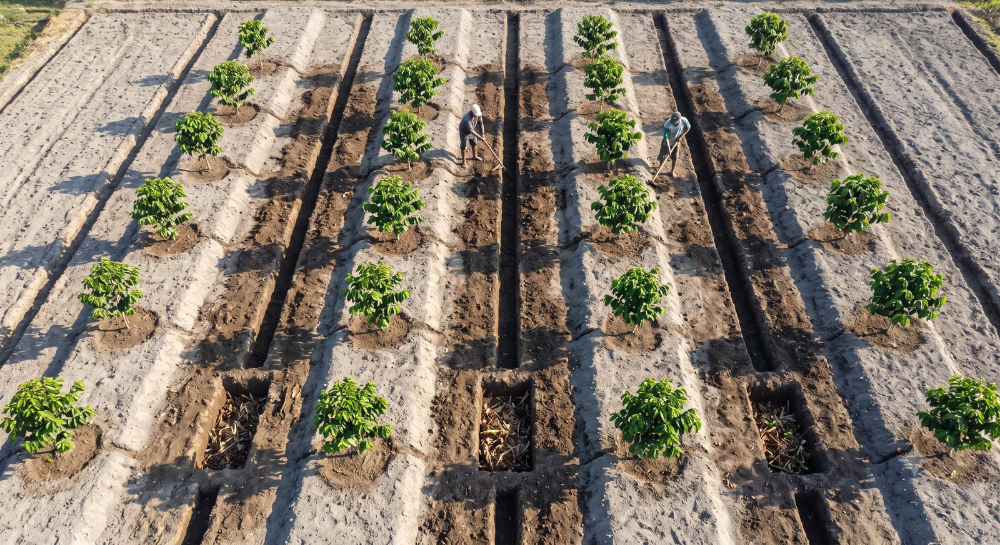

Apa yang dibeli · berapa · ditaruh di mana · bentuk permukaan tanah · 1 Agustus 2026
📖 Ini ringkasan kerja. Kajian 4 opsi, matriks, biaya, dan seluruh rujukan ada di tombol ↗ Buka penuh di atas.
Uji tanah mengukur KIMIA. Kerak abu Kelud adalah FISIKA. Dua-duanya harus dibereskan.Percuma menambah pupuk kalau akarnya tidak bisa bernapas dan air tidak bisa masuk. Urutan yang benar: bereskan permukaan dulu, baru pupuknya bekerja.
👁 Menaruh pupuk · cek akar · bentuk permukaan
Angka, takaran, daftar belanja, dan uji lapangan ada di bawah gambar.

1234
S1Menaruh kompos jadi pita
Pita RATA & TIPIS — selebar satu jengkal (20 cm), setebal kelingking (± 1 cm). Bukan gundukan, bukan disebar rata ke seluruh permukaan
Satu ember biasa (± 10 liter) = satu pohon. Tidak perlu menimbang apa pun
Tanah antara pita dan batang KOSONG — pita duduk di garis tetesan tajuk, tempat akar penyerap bekerja
Langsung ditutup mulsa. Di gambar ini separuh pita sudah tertutup selimut daun kering, separuh lagi masih terbuka — begitu selesai menaruh, langsung tutup supaya tidak kering dan tidak hanyut
Kompos wajib MATANG — tidak berbau tajam, tidak hangat, gembur. Yang mentah membakar akar dan membawa biji gulma. Kokopit boleh dicampur sebagai tambahan, tapi harus dikomposkan dulu dan tidak boleh 100%.

1234
S2Menaruh pupuk kimia di dua alur
Alur kanan MASIH TERBUKA — butiran hanya di dasar alur. Tidak satu butir pun di tanah rata, di mulsa, atau menempel batang. Di atas mulsa butiran tak pernah sampai ke akar; menempel batang, ia membakar kulit
Alur kiri SUDAH DITUTUP tanah — tidak ada butiran terlihat lagi. Pupuk yang dibiarkan terbuka menguap dan hanyut, jadi tutup begitu selesai menabur
DUA alur pendek TERPISAH, ada tanah utuh lebar di antara ujung-ujungnya. Jangan pernah disambung jadi lingkaran penuh — di lahan datar itu mengurung air keliling pohon
Alur jauh dari batang, di garis tetesan tajuk — sama seperti pita kompos. Cincin keliling batang tetap bersih
Takaran yang mengikat:KCl 75–100 g · Urea 100–150 g per pohon (dibagi 2× musim). SP-36 dilewati — fosfor tanah kita sudah TINGGI. "Segenggam" hanya pembanding kasar, bukan takaran resmi; warna butiran di gambar tidak menandakan merek apa pun. Dalamnya cukup dangkal — sekadar bisa ditutup tanah; angka kedalaman pastinya belum kami kunci.

1234
S3Cincin kosong pangkal batang
Pangkal batang berdiri di TANAH KOSONG — tidak ada mulsa, tidak ada kompos, tidak ada timbunan tanah yang menempel kulit batang
Telapak tangan muat di cincin kosong itu — inilah ukurannya. Kalau tangan tidak muat, mulsanya terlalu masuk ke dalam
Mulsa berbentuk CINCIN seperti donat, berhenti satu jengkal sebelum batang. Bukan hamparan rata yang menutup semuanya
Akar halus putih terlihat di muka potongan — akar kopi menjalar mendatar tepat di bawah permukaan, itu sebabnya lapisan di atasnya harus tipis dan berongga
Gambar ini mengunci BENTUK, bukan ketebalan. Tebal tiap lapisan memang tidak bisa dibedakan dengan mata di gambar seperti ini — pakai tabel ketebalan di bawah untuk angka. Yang hanya bisa ditunjukkan gambar adalah cincin kosong keliling batang, dan itu yang paling sering dilanggar di lapangan.

1234
S4Punggung kura-kura — BENAR✓ angka diperiksa⚠ mulsa digambar ± 11 cm, patokan 5–10 cm
Leher akar terbuka — pangkal yang melebar harus terlihat, tidak tertimbun apa pun. Cincin bersih dua jengkal di sekelilingnya
Permukaan turun terus ke luar — beda tinggi 8 cm sepanjang 1,1 m. Landai, tapi air selalu pergi menjauh dari batang. Garis putus-putus mendatar di gambar adalah acuan datar, untuk memperlihatkan penurunan itu
Rorak 80 × 40 cm — dua kali lebih lebar daripada dalam, palung lebar bukan sumur. Diisi cacahan residu, dan menembus pita abu sampai tanah cokelat di bawahnya
Pita abu pucat ± 20 cm — kerak abu Kelud yang menolak air. Mulsa di atasnya jauh lebih tipis daripada pita ini; itu perbandingan yang paling gampang diingat di lapangan
✅ Ini yang benar. Batang di titik tertinggi, air selalu pergi, mulsa berhenti satu jengkal sebelum batang, rorak menelan air yang datang. Keenam angka di gambar ini sudah kami periksa satu per satu dan semuanya benar.Satu catatan kecil: mulsanya digambar sedikit lebih tebal daripada labelnya — terbaca ± 11 cm, patokannya 5–10 cm. Yang penting sudah tercapai: mulsa jelas jauh lebih tipis daripada pita abu.

1234
S5Piringan cekung — SALAH
Batang di titik TERENDAH — inilah kesalahan pokoknya
Air mengurung batang — kulit pangkal terus basah = jalan masuk busuk leher
Gundukan tepi — dimaksudkan menahan air, di lahan datar justru jadi bendungan
Lapisan abu pucat ± 20 cm di atas tanah cokelat — kerak inilah yang menolak air
⛔ Piringan cekung DIBATALKAN untuk kebun ini. Piringan cekung adalah desain panen air untuk lahan kering atau miring. Di kebun kita ia membuat kolam.

12345
S6Tampak atas — guludan · alur · rorak
Pohon berdiri di atas guludan — pita lebar 1,8 m, naik hanya 5 cm. Sedikit, tapi cukup
Alur antar-baris 35 × 20 cm(satu jengkal dalam) — kosong, bukan berisi air. Warnanya lebih gelap karena sudah menembus kerak abu
Rorak 80 × 40 × 40 cm — lebih dalam dan lebih lebar dari alur, diisi cacahan residu
Dua pekerja sebagai pembanding ukuran
Permukaan pucat = kerak abu yang dibiarkan. Hanya 13% yang dipindah — sisanya dilewati, bukan dibuang
Pada abu setebal 20 cm, yang ditata bukan lagi piringan per pohon melainkan jalan air satu petak. Pohon di jalur tinggi, alur di jalur rendah.
🖼️ Semua gambar di halaman ini dibuat dengan bantuan AI sebagai alat bantu memahami — bukan foto kebun kita, jangan dipakai sebagai bukti kondisi lapangan. Yang sah adalah bulatan bernomor dan daftar di bawah tiap gambar — itu tulisan kita. Kalau angka di gambar berbeda dengan tabel di halaman ini, tabel yang benar.
1 Kondisi tanah — titik tolak
N — Nitrogen
0,14%
RENDAH → Urea
K — Kalium
16,4
mg/100g · RENDAH → KCl
C-Organik
1,90%
RENDAH → kompos kambing
P — Fosfor
95,5
mg/100g · TINGGI → SP-36 di-skip
pH tanah
6,2
IDEAL 5,5–6,5 → jangan dikapur
🚨 pH 6,2 sudah ideal — ini mengubah banyak hal. Lembar uji berbunyi "tidak diperlukan pengapuran". Artinya: semen dan kapur ditolak · abu kayu dibatasi keras (bersifat mengapur) · manfaat biochar "menaikkan pH" berubah dari keuntungan jadi hal yang diawasi. Sumber kalium diambil dari KCl dan kompos kambing, bukan dari abu.
2 Bentuk permukaan tanah — yang salah dan yang benar
Ukuran penataan permukaan — versi BENAR
Bagian
Ukuran
Patokan tanpa meteran
Ø piringan
± 2,2 m (jari-jari 1,1 m)
tiga langkah biasa menyeberang
Beda tinggi batang → tepi
8 cm, turun terus ke luar
empat jari dirapatkan
Leher batang dikosongkan
Ø 40 cm, bersih total
dua jengkal
Tanah penutup akar
2–3 cm
satu ruas jari telunjuk
Kompos kambing
± 1 cm, pita selebar 20 cm di tepi tajuk
setebal kelingking · pita satu jengkal
Mulsa
5–10 cm, berhenti 20 cm dari batang
dua sampai empat ruas jari
Rorak
80 × 40 × 40 cm
dua jengkal dalam
Alur antar-baris
35 cm lebar × 20 cm dalam
satu jengkal dalam
Guludan
pita 1,8 m, naik 5 cm
—
Lapisan abu Kelud
± 20 cm (skenario)
satu jengkal
🚧 Batas keras: total bahan PADAT (tanah + kompos) tidak lebih dari 5 cm sekali kerja
📏 Kalau angka di gambar berbeda dengan tabel di halaman ini, tabel yang benar. Tabel tidak bisa salah dibaca gara-gara posisi garis atau panah.
3 Lalu bahannya ditaruh di mana
Bagian sebelumnya menjawab "di mana TIDAK boleh ada apa-apa". Dua gambar ini menjawab lanjutannya. Dua jenis bahan, cara menaruhnya berbeda total — dan dua-duanya sering keliru di lapangan.
Bahaya terbesar
Parit melingkar penuh di leher batang. Air terkurung menempel di pangkal = jalan tercepat menuju busuk leher. Kerukan wajib dibuka ke satu sisi.
Aturan mutlak
Nol cekungan tertutup di mana pun. Setiap titik harus punya jalan keluar.
Uji satu ember — tanpa alat
Siram ± 1 liter di pangkal batang. Habis < 1 menit = benar. Masih menggenang = keruk lagi ke arah luar.
4 Berapa tebal boleh menutup akar
Yang membunuh akar bukan TEBALnya, tapi PADATnya. Tanah dan kompos menutup rongga dan memutus pertukaran udara. Menimbun akar dengan 10 cm kompos berarti mengulang persis masalah abu Kelud, hanya warnanya cokelat. Mulsa boleh tebal karena berongga — udara dan air tetap lewat di sela ranting.
Kalau setelah ditutup 2–3 cm masih ada akar yang terlihat: biarkan. Kopi memang berakar dangkal. Pelindungnya mulsa, bukan timbunan. Menutup akar ≠ mengubur akar.
5 Kompos kambing — bukan jumlahnya, penempatannya
Kalau mau 2 cm sepiringan
30 kg
per pohon = 20 ton untuk 672 pohon. Mustahil — lupakan
Jatah 5 kg disebar RATA
3 mm
Praktis hilang, tidak berpengaruh apa-apa
Jatah sama, jadi PITA 20 cm
± 1 cm
Mendarat tepat di akar penyerap, lalu ditutup mulsa
Takarannya: satu ember biasa (± 10 liter) = satu pohon. Ditaruh sebagai pita selebar satu jengkal di garis tetesan tajuk. Tidak perlu menimbang apa pun. ⚠️ Kompos wajib matang — tidak berbau tajam, tidak hangat, gembur. Yang mentah membakar akar dan membawa biji gulma.
6 Skenario terburuk — kalau abunya 20 cm merata
⚠️ Uji dulu sebelum sekop pertama
Abu jatuh 12 tahun lalu — akar mungkin sudah tumbuh naik ke dalamnya. Gali satu pohon pelan dengan tangan, cari akar putih halus. Kalau ada → jangan keruk dalam, cukup buka lehernya, sisanya serahkan pada alur dan rorak.
Beban seluruh K1–K3
90–135
hari-orang · 134 m³ · dengan 2 orang = satu musim kemarau penuh
Dipandu peta genangan (30% terparah)
27–40
hari-orang · 40 m³ — terkelola. Tandai titik yang airnya berdiri > 1–2 jam setelah hujan deras
⭐ Ini pekerjaan yang paling cocok diborongkan dari semua yang antre — mutunya bisa diperiksa sekilas tanpa keahlian (leher akar terlihat? ada gundukan? ada cincin mulsa yang tidak menyentuh batang?), dan kesalahannya bisa diperbaiki. Kebalikan dari pemangkasan yang salah potongnya permanen. Uji satu petak dulu, catat jamnya, baru tetapkan tarif.
7 Field check — lima uji sebelum apa pun dikunci
Uji 1
Tebal abu
Gali 3 titik per kebun sampai ketemu batas warna tanah asli
Uji 2
Leher akar
Melebar & terlihat, atau lurus masuk tanah seperti tiang?
Uji 3
Titik genangan
Setelah hujan deras, tandai yang airnya berdiri > 1–2 jam
Uji 4
Tetes air
Tetesan berdiri > 5 detik di kerak = kerak memang menolak air
Uji 5
Akar dalam abu
Gali 1 pohon dengan tangan — menentukan boleh-tidaknya keruk dalam
8 Yang dibeli — daftar belanja
Bahan
Per pohon/tahun
Total K1–K3 · 672 pohon
Cara pakai
🐐 Kompos kambingperingkat 1
3–5 kg satu ember
2,0–3,4 ton (50–84 karung)
Pita selebar satu jengkal di tepi tajuk, tebal ± 1 cm, ditutup mulsa
🌾 Sekam bakarperingkat 2
0,5–1 kg
340–670 kg (22–45 karung)
Dicampur ke tanah lapisan atas, jangan ditumpuk. Dosis moderat — sifatnya agak alkali
🧂 KCl
75–100 g
50–67 kg (1–1,5 sak)
Sumber kalium utama — bukan abu
🌱 Urea
100–150 g, dibagi 2×
67–101 kg (1,5–2 sak)
Jangan bersamaan dengan abu — beri jeda 2–4 minggu
SP-36
SKIP — fosfor tanah sudah tinggi (95,5 mg/100g)
Semen / kapur / dolomit
TIDAK DIPAKAI — pH sudah 6,2, menaikkannya justru merusak
Estimasi biaya
≈ Rp 2,96 juta per siklus untuk K1–K3. K4 (Rumah Wakif) dihitung terpisah — dana wakaf tidak membeli pupuk pohon pribadi
Dihitung dari census aktual: hanya Hijau + Biru yang dipupuk (672 pohon di K1–K3). 382 pohon Merah di-skip — sedang dicabut untuk peremajaan. Bibit sulaman kelak pakai dosis umur-1 yang jauh lebih kecil, bukan dosis dewasa.
Acuan cepat · Pupuk, Pembenah Tanah & Kerak Abu · Wakaf Produktif Kebun Kopi Ngantang · uji tanah 16 Juni 2026 · halaman diperluas 1 Agustus 2026.
Halaman ini sengaja ringkas untuk dipakai di lapangan. Kajian 4 opsi, matriks perbandingan, seluruh hitungan, dan rujukan ilmiah ada di versi lengkap — buka lewat tombol ↗ Buka penuh.
⚠️ Angka yang masih asumsi: batas 5 cm bahan padat · ukuran alur · jumlah rorak · kecepatan gali · dan angka 20 cm itu sendiri (skenario, bukan pengukuran). Status BRIN: penjajakan, belum ada MoU maupun PKS.